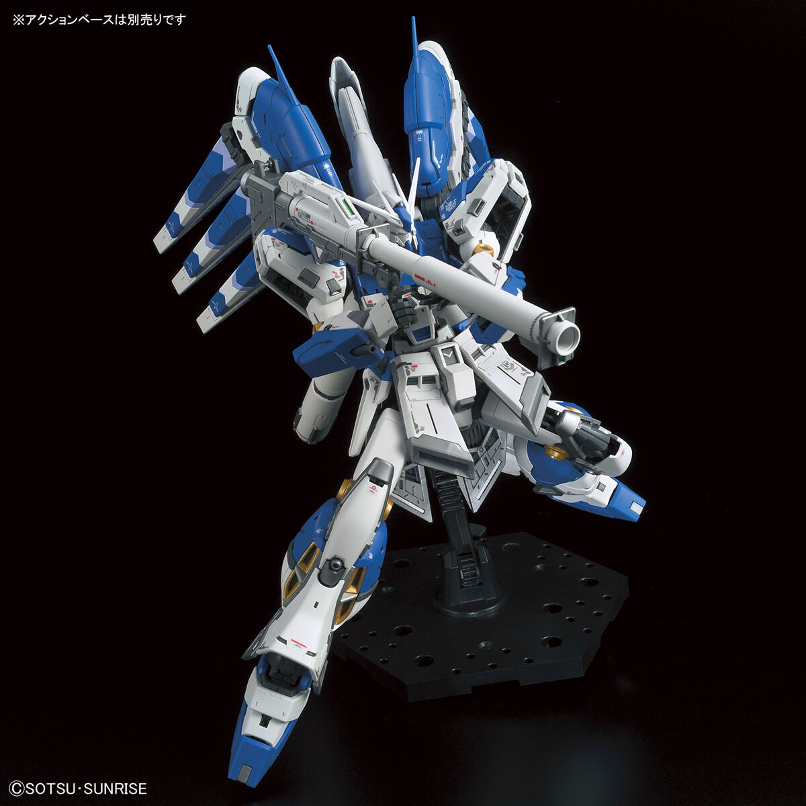
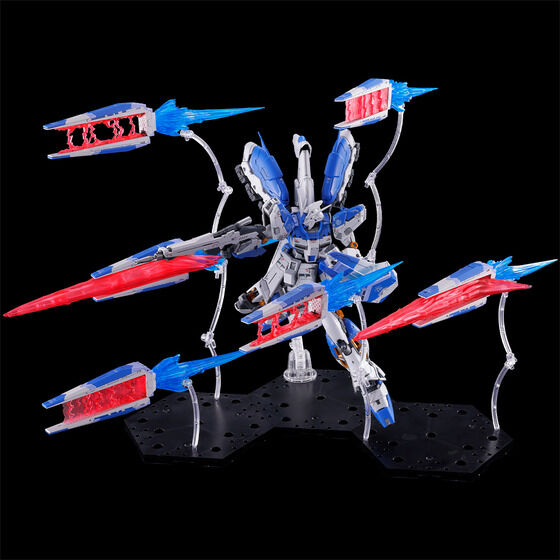
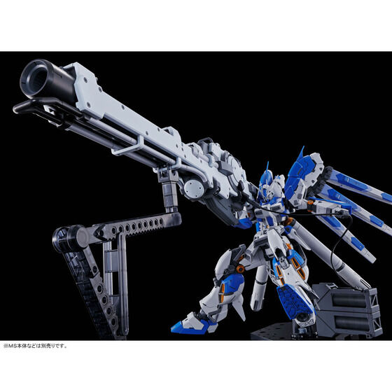
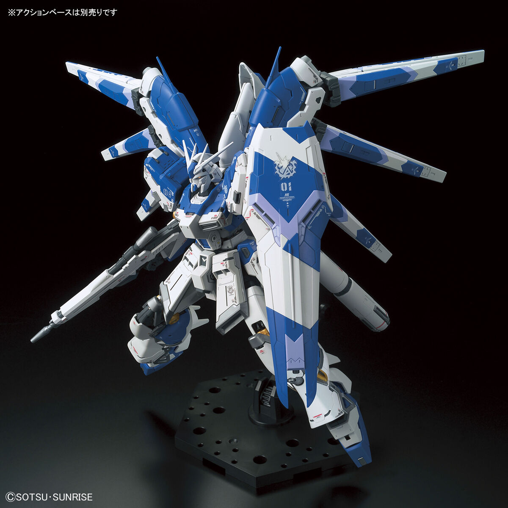

RX-93-ν2 Hi-ν Gundam (Còn được gọi là "High-New") là một phiên bản thay thế của RX-93 ν Gundam xuất hiện trong Mobile Suit Gundam: Beltorchika's Children và được điều khiển bởi Amuro Ray.
Ban đầu được phát triển tại cơ sở Anaheim Electronics gần Von Braun, thiết kế cơ bản của RX-93-ν2 Hi-ν Gundam là bản cập nhật của các Mobile Suit Loại Gundam trước đây, quay trở lại những thiết kế cơ bản của các mobile suit do Liên bang sản xuất và đi ngược lại xu hướng các mobile suit cỡ lớn hơn và các thiết kế MS phức tạp hơn vào thời điểm đó. Đặc điểm đáng chú ý nhất của nó là một bộ sáu loại vũ khí đa năng được gắn trên lưng, được gọi là "Fin Funnels", có khả năng tấn công và phòng thủ. Điều này làm cho nó trở thành MS Gundam type đầu tiên được Newtype hoàn hảo sử dụng.
Hi-ν Gundam cũng có hệ thống Psycommu được thiết kế và lái bởi chính Amuro Ray. Ban đầu, hệ thống này chỉ đóng vai trò là cơ chế kiểm soát các Fin Funnel. Tuy nhiên, sau khi Londo Bell bắt được MSN-03-2 Psycho Doga được Neo Zeon sử dụng, công nghệ Psycho-Frame thu được từ nó đã được tích hợp vào Hi-ν Gundam, cải thiện khả năng phản hồi của nó thông qua điều khiển sóng não. Do những sửa đổi của Amuro, hậu tố "-ν2" đã được thêm vào số mẫu ban đầu là RX-93. Hi-ν Gundam được hoàn thành trong vòng ba tháng, đây là kết quả của sự phát triển công nghệ khung di động (Movable Frame Technology) và là nỗ lực không mệt mỏi của các kỹ sư cũng như sự hiểu biết sâu sắc của Amuro về mobile suit.
Được gắn ở đầu, cặp vũ khí bắn đạn pháo có tốc độ bắn cao nhưng sức mạnh nhỏ và không thể làm hỏng lớp giáp của Mobile Suit nhưng chúng có thể làm hỏng các khu vực được bọc thép nhẹ như cảm biến và có thể bắn hạ các mục tiêu nhỏ, bọc thép nhẹ như tên lửa, xe nhỏ, v.v.
Tùy thuộc vào thiết kế, cẳng tay phải của Hi-ν có thể được trang bị Machine Gun hoặc Gatling Gun có tích hợp Beam Saber. Mặc dù Machine Gun có cỡ nòng nhỏ nhưng hiệu quả trong việc hạn chế chuyển động của kẻ thù và có phạm vi bắn rộng do nằm trên cẳng tay.
Hi-ν Gundam mang theo ba Beam Saber, hai thanh được cất ở backpack và một thanh được cất ở cẳng tay trái. Hai beam saber ở packback là loại được tùy chỉnh và có thể phát ra lưỡi Beam thứ hai từ đáy chuôi kiếm. Beam Saber được cất ở cẳng tay trái là loại tiêu chuẩn và được dùng như một vũ khí dự phòng.
Hi-ν Gundam mang theo 6 Fin Funnel, được gắn trên packback theo hình dạng giống như đôi cánh. Mỗi chiếc đều có dải tăng tốc hạt lớn kiểu mở và tích hợp một máy phát điện nhỏ. Mỗi Funnel được tạo thành từ ba khối, đóng vai trò là một đơn vị AMBAC. Vì thế , mặc dù có kích thước lớn nhưng tính di động, hiệu quả hoạt động và thời gian hoạt động của chúng vượt xa các Bit hoặc Funnel thông thường chỉ dựa vào lực đẩy.
Do hệ thống nén hạt lớn và máy tạo I-field có chung các nguyên tắc cơ bản nên Fin Funnel có thể triển khai hàng rào Beam theo ý muốn. Ngoài ra, vị trí của Funnel cho phép thay đổi tùy ý trong phạm vi bao phủ hiệu quả của hàng rào Beam. Hi-nu Gundam có thể dùng 4 Funnel tạo thành màng chắn Beam dạng kim tự tháp để phòng thủ. Tuy nhiên, trong trường hợp vũ khí tầm xa của kẻ thù can thiệp vào Field, psycho-wave sẽ xảy ra, dẫn đến tổn thương tinh thần cho cả MS và phi công được liên kết.
Ban đầu , các Fin Funnel được dự định sắp xếp theo kiểu khác , chẳng hạn như Nu Gundam nhưng do các yếu tố như nạp lại năng lượng và cân bằng nên được thiết kế chia đều 2 bênh với 3 lổ cắm giống như một đôi cánh.
Là vũ khí chính và có thể thay đổi công suất. Công suất tối đa có thể sánh ngang với các khẩu pháo được sử dụng bởi các tàu chiến vào thời điểm đó. Beam Rifle cũng có thể hoạt động như Machine Gun.
Được chỉnh sửa từ Hyper Bazooka của Liên bang Trái đất, nó có cỡ nòng 280mm và cải thiện tầm bắn cũng như sức công phá.
Là vũ khí mạnh nhất của Hi-ν Gundam. Nó lấy năng lượng từ động cơ của Ra Cailum thông qua một dây cáp năng lượng và có đủ sức mạnh để tiêu diệt một thiết giáp hạm chỉ trong một phát bắn. Được gắn ở bên cạnh Ra Cailum khi không sử dụng. Theo manga Beltorchika's Children, nó được sửa đổi từ súng chính của Ra Cailum .
Một trang bị phòng thủ cơ bản dùng để chặn các đòn tấn công vật lý và Beam. Tương tự như hình dáng của ν Gundam , khiên của Hi-ν Gundam được trang trí bằng biểu tượng của Amuro. Được trang Beam Cannon 7,8 MW và 4 tên lửa. Ở phiên bản được thiết kế lại, Shield chỉ được tích hợp Beam Gun.
Được trang bị 2 bình nhiên liệu kiêm luôn bộ đẩy tương tự của Zeon và được gắng ở backpack cho phép di chuyển nhanh chóng mà không cần sử dụng bộ đẩy chính trên MS . Chúng sẽ bị loại bỏ sau khi nhiên liệu được sử dụng hết.
Được cấy ghép từ MSN-03-2 Psycho Doga bị bắt giữ, Psycho-Frame là một vật liệu được làm từ các chip Psycommucực nhỏ được rèn vào Mobile Suit Frame ở cấp độ phân tử. Được lắp đặt xung quanh buồng lái của Hi-ν Gundam, cho phép phản ứng tốt hơn đối với các loại vũ khí ở mọi tầm bắn bằng với Funnel. Theo Amuro , nó còn có xu hướng thúc đẩy suy nghĩ của phi công trở nên quyết liệt hơn.
Như một món quà dành cho Bright Noa vì vai trò mới là chỉ huy của Londo Bell, Lực lượng Liên bang Trái đất đã giao một MS mới do Anaheim Electronics phát triển cho đơn vị của anh ấy. Mobile Suit này sau đó được cài đặt hệ thống Psycommu do chính Amuro thiết kế và trở thành Hi-ν Gundam. Vì EFF không muốn một Newtype như Amuro lái Mobile Suit loại Gundam nên những chiếc Gundam trước đã bị phong ấn như vũ khí hạt nhân, và Hi-ν Gundam trở thành Mobile Suit chủ lực của Londo Bell .
Một ngày sau khi hạm đội của Char Aznable rời Sweetwater, Amuro khởi hành vào không gian và tham gia cùng phần còn lại của Londo Bell trong khi đó Beltorchika Irma lên mặt trăng để kiểm tra lần cuối cho Hi-ν Gundam.
Sau Trận chiến ở Fifth Luna , Amuro đã bắt được chiếc MSN-03-2 Psycho Doga của Grave Guss thuộc Neo Zeon , bị vứt bỏ sau khi hư hỏng. Sau khi đọc hướng dẫn sử dụng, Amura cho rằng hệ thống Psycommu của nó giống như được thiết kế cho Gundam. Sau đó, Beltorchika đã tự mình lái chiếc Hi-ν Gundam mang nó đến Ra Cailum , đi cùng với một số kỹ sư của Anaheim và các Fin Funnel vẫn chưa được thử nghiệm.
Không giống như Psycommu của Hi-ν Gundam, chỉ được sử dụng để điều khiển Fin Funnel . Psycho Doga thì có Psycho-Frame , một loại Psycommu được tích hợp trực tiếp vào Mobile Suit Frame , xung quanh buồng lái và có thể gia tăng khả năng di chuyển của phi công. Sau khi biết rằng Psycho-Frame sẽ không can thiệp vào Psycommu mà anh thiết kế, Amuro đã ra lệnh cắt các phần khung của Psycho Doga và lắp xung quanh buồng lái của Hi-ν Gundam, hy vọng rằng nó sẽ cải thiện độ chính của Fin Funnel.
Amuro sớm nhận ra rằng vì cả Psycho Doga và Hi-ν Gundam đều được phát triển bởi Anaheim Electronics nên Char hẳn đã biết về Hi-ν Gundam và cảm thấy thất vọng nên đã bỏ lại , hy vọng rằng Amuro sẽ sử dụng nó để cải thiện Hi-ν Gundam để có thể đánh bại hắn trong một cuộc chiến công bằng.
Sau khi khởi hành từ Londenion , quá trình kiểm tra cuối cùng xung quanh buồng lái của Hi-ν Gundam đã hoàn tất. Đến thời điểm này, những phần chưa sơn đều được sơn màu Londo Bell .
Trong cuộc tấn công của Londo Bell vào Axis, Amuro đã lần đầu sử dụng Hi-ν Gundam. Trong trận chiến kế tiếp, Kayra Su, người lái chiếc RGZ-91 Re-GZ , đã bị Grave Guss đang lái một Psycho Doga khác bắt giữ vì nghĩ rằng cô ấy là Amuro . Sử dụng Kayra làm con tin, Grave yêu cầu Amuro giao Hi-ν Gundam. Sau đó hắn cho vài Geara Doga quấn Hi-ν Gundam bằng những sợi dây thép. Amuro đồng ý và nói rằng anh ấy sẽ vứt Beam Rifle và các Fin Funnel. Tuy nhiên, Grave cho rằng Fin Funnel chỉ là tấm tản nhiệt và ra lệnh cho các phi công Geara Doga giết Amuro.
Khi Geara Doga truyền điện áp cao qua dây dẫn, phản ứng theo bản năng của Amuro , Fin Funnel bắn vào dây điện, cắt đứt chúng. Tức giận vì Amuro dám chống trả, Grave đã bóp nát Kayra . Thay vì truy đuổi Grave , Amuro chọn cách phục hồi cơ thể của Kayra. Sau đó anh ta buộc phải rút lui trước hỏa lực tổng hợp của Geara Doga và hạm Rewloola của Neo Zeon .
Sau cuộc tấn công đầu tiên vào Axis với kết thúc thất bại, Londo Bell đã vạch ra một kế hoạch khác. Vì ngay cả khi việc thả Axis không thành công, Char vẫn có thể gây ra Mùa đông hạt nhân (Winter Nuclear) bằng cách cho nổ vũ khí hạt nhân trên tàu ở quỹ đạo thấp của Trái đất. Do đó, phía London Bell phải thay đổi hướng đi của nó bằng cách phá hủy bộ đẩy phía sau và chia cắt tiểu hành tinh bằng cách bắn bốn tên lửa hạt nhân còn lại của Ra Cailum. Để thực hiện được điều này, các tàu chiến của Londo Bell sẽ tiếp cận Axis bằng vỏ bọc của những quả bóng bay giả trong khi đó Amuro cố gắng bắn tỉa bộ phận đẩy của Axis cách sử dụng Hyper Mega Bazooka Launcher được cung cấp bởi một sợi cáp kết nối với động cơ chính của Ra Cailum từ một hướng khác.
Trong chiến dịch, Amuro đã bị tấn công bởi Grave Guss lái Psycho Doga và Quess Paraya lái NZ-333 α Azieru. Mặc dù Amuro chiếm thế thượng phong nhưng Grave vẫn có thể cắt đứt một sợi dây cáp. Khi Amuro dần bị Quess áp đảo, Amuro kích hoạt rào chắn của Fin Funnel, giúp bảo vệ khỏi các cuộc tấn công của Quess , sau đó kết nối Hyper Mega Bazooka Launcher với cáp dự phòng và bắn vào phản lực của Axis. Tuy nhiên, tàu Musaku lớp Musaka đã chặn được tia Beam. Mặc dù Musaku đã bị phá hủy nhưng động cơ đẩy của Axis vẫn nguyên vẹn. Sau đó Quess đã dùng Funnel cuối cùng của mình làm tan chảy sợi cáp dự phòng của Hyper Mega Bazooka Launcher
Sau khi Hyper Mega Bazooka Launcher hỏng , Amuro đã bỏ nó lại và tiến thẳng đến Axis. Khi đối đầu với MSN-04II Nightingale của Char,Amuro đã bị áp đảo bởi khả năng di chuyển vượt trội và Funnel của nó. Tuy nhiên, Hi-ν Gundam đột nhiên được bao phủ trong ánh sáng giống như cực quang khi Amuro nghe thấy một giọng nói gọi anh là "ba". Ánh sáng bảo vệ Amuro, chặn các Beam từ Funnel của Nightingale . Sau cùng, Funnel của Nightingale đã sử dụng hết năng lượng và rơi xuống bề mặt của Axis.
Khi Amuro đang né tránh những phát đạn của Nightingale trên bề mặt của Axis , Amuro bất ngờ nhìn thấy con tàu thứ 4 của hạm đội Neo Zeon, chở đầy tên lửa hạt nhân mà Char định cho nổ ở quỹ đạo thấp. Nhận ra bản chất của con tàu, Amuro bắn vào nó, gây ra một vụ nổ hạt nhân lớn ở phía trước Axis và nhấn chìm Nightingale. Sau đó, Amuro tấn công các động cơ xung Axis nhưng chỉ có thể phá hủy một trong bốn động cơ , trước khi khẩu súng trường hết năng lượng. Sau đó, Amuro phá của một động cơ khác bằng Machine Gun ở tay phải, nhưng bị tấn công bởi Geara Doga. Re-GZ đã xuất hiện và xử lý Geara Doga.
Sau khi Amuro quay lại thì thấy Ra Cailum đã hạ cánh xuống Axis. Amuro đã cố gắng quay trở lại Ra Cailum thì bị chặn bởi phát bắn từ Bazooka của Nightingale vừa đáp đất bên cạnh. Sau khi vứt đi Bazooka và tuyên bố bây giờ Axis sẽ rơi xuống Trái đất do bị hút bởi lực hấp dẫn , cả hai đã lao vào nhau bằng Beam Saber. Sau khi Beam Saber của Hi-ν Gundam bị phá hủy , thay vì chiến đấu với Char , Amuro đã ngừng chiến đấu và tiếng về Ra Cailum. Trước sự ngạc nhiên của Char , Amuro đã hạ cánh , ra khỏi buồng lái và đi vào một đường hầm bên trong Axis. Sau khi nhận ra rằng Amuro đang cố gắng tách Axis từ bên trong. Thay vì tiêu diệt một Gundam trống rỗng, Char rời khỏi Nightingale và đuổi theo Amuro . Ở bên trong đường hầm của Axis , Amuro đã bác bỏ hệ tư tưởng của Char và cố gắng giết anh ta bằng súng phóng tên lửa, Char cũng đáp trả khẩu súng mang theo. Trước khi khai hỏa , Amuro đã nghe thấy giọng nói gọi mình là "ba" và vụ nổ xảy ra đã khiến Amuro bay trở lại bề mặt của Axis. Vì vẫn lành lặng nên Amuro cho rằng mình đã được cứu.
Sau đó Amuro quay trở lại Gundam. Chưa kịp vào buồng lái , Amuro đã bị Nightingale tấn công nhưng vẫn chống trả được. Trong tình trạng không còn vũ khí , cả hai đã lao vào nhau bằng nấm đấm. Khi Amuro gần phá hủy được phần đầu của Nightingale thì Quess Paraya bất ngờ xuất hiện và dùng α Azieru đâm vào Gundam. Ngay khi Quess chuẩn bị nghiền nát con Gundam, thì Jegan của Hathaway Noa đã bắn vào buồng lái của α Azieru, giết chết Quess .
Char sau đó tách buồng lái khỏi Nightingale, cố gắng trốn thoát nhưng bị Amuro bắt được. Trong khi đó, Ra Cailum cho nổ chất nổ được đặt bên trong Axis, chia nó thành hai nửa.
Tuy nhiên, một nửa của Axis vẫn tiếp tục rơi về phía Trái đất. Với buồng lái của Char trong tay, Amuro di chuyển đến phía trước Axis đang rơi xuống và cố gắng đẩy nó trở lại. Ngay lúc đó, các Mobile Suit khác của Liên bang bắt đầu đến. Noi theoAmuro, họ đã cùng nhau đẩy Axis. Tuy nhiên, ngay cả khi có hơn 50 Mobile Suit đẩy hết sức, Axis vẫn tiếp tục rơi và từng Mobile Suit bắt đầu phát nổ vì quá nóng.
Vào khoảnh khắc ấy , Amuro lại tiếp tục nghe thấy tiếng gọi " ba " và một luồn ánh sáng phát ra từ Hi-ν Gundam đánh bật các MS khác. Trong lúc Amuro cùng buồng lái của Char tiếp tục cố gắng đẩy Axis, vô số ánh sáng phát ra từ các sinh linh đất đã tụ hợp lại Hi-ν Gundam. Tạo ra một con đường ánh sáng mang cả 2 mảnh của Axis lẫn Hi-ν Gundam bay đi mất.
